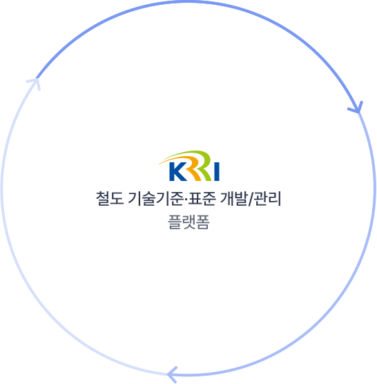

철도 기술기준·표준 개발/관리
플랫폼 소개
-
- 철도 기술기준·표준 개발/관리 플랫폼은 어떤 서비스인가요?
- 철도 기술기준·표준의 통합 데이터 관리 체계를 구축하고 기술의 개발·검증 및 제·개정 관리 절차를 시스템화 하였습니다.
통합정보 제공 서비스, 개발/검증 서비스, 제·개정 관리 서비스가 상호 연결되어 플랫폼 내에서 통합된 데이터로 활용할 수 있습니다.
철도 기술기준·표준통합정보제공서비스철도 기술기준과 표준 데이터를 탐색하고
손쉽게 활용할 수 있도록 기반을 만듭니다철도 기술기준·표준개발·검증 서비스새로운 미래철도기술을 빠르게 기술기준과 표준에 도입할 수 있도록
개발검증 과정간 데이터 활용과 협업을 지원합니다철도 기술기준·표준제·개정 관리 서비스플랫폼을 통해 체계화된 제·개정 절차를 통해
신청인의 의견을 검토하여 보다 신속한 제·개정 업무를 수행합니다-
01 철도 기술기준·표준 개발·검증 서비스
새로운 철도 기술 및 공법, 장치 혹은 용품 등 연구개발의 성과품을 기술기준(안) 혹은 표준(안)으로 개발할 수 있도록 “요구사항”기반의 개발 및 검증의 전 과정을 지원합니다.
이를 통해 연구 수행 업무를 체계적으로 관리하여 보다 안정적인 “기술기준(안)·표준(안)” 을 작성할 수 있도록 돕습니다.-
통합 대시보드 관리대상 프로젝트의 최신현황을 모니터링
-
프로젝트 리포팅 프로젝트별 업무이력과 현황을 종합적으로 관리
-
개발검증 워크플로우 워크플로우와 활용 템플릿을 통한 실무 지원
-
기술기준(안)·표준(안) 작성 검증완료된 요구사항에 대한 “문서” 작성 지원
-
분야간 협업 지원 연구책임자, 담당자, 이해관계자 등 능동적 의견 수렴
-
-
02 철도 기술기준·표준 제·개정 관리 서비스
기존 오프라인 방식에서 온라인으로 직접 철도 기술기준, 표준의 제·개정을 신청하고 디지털화된 정보로 관리합니다.
신청접수, 의견검토, 이력관리를 업무 절차에 따라 지원하며 디지털에 기반한 체계적이고 신속한 업무지원을 통해 빠른 의사결정을 돕습니다-
통합 대시보드 관리대상 프로젝트의 최신현황을 모니터링
-
프로젝트 리포팅 프로젝트별 업무이력과 현황을 종합적으로 관리
-
제·개정 관리 워크플로우 온·오프라인 제·개정 의견 신청을 통합 관리
-
신청인 의견 검토/타당성 검토 디지털화된 자료에 기반하여 체계적으로 검토
-
단계별 심의 관리 온라인 기반 심의요청 및 개최를 통해 단계별 심의회 관
-
-
03 철도 기술기준·표준 통합정보 제공 서비스
더 이상 일일이 문서를 다운받지 않아도 철도 기술기준·표준 정보를 손쉽게 찾고 확인할 수 있습니다.
다양한 정보 공개를 통해 철도 기술기준, 표준 정보의 최신 동향을 파악할 수 있도록 정보 접근성과 활용성을 강화하였습니다.-
통합 검색 기술기준, 표준 정보를 한곳에서 조회, 확인
-
신구대조표 개정 이력에 따라 각각의 문서를 비교, 확인
-
3단 문서비교 연관된 문서를 3단 뷰로 손쉽게 비교, 검토
-
기술기준 관계도 차량기술기준의 연관관계 및 속성정보를 시각화
-
- 철도 기술기준·표준 개발/관리 플랫폼은 어떤 서비스인가요?
- 철도 기술기준·표준의 통합 데이터 관리 체계를 구축하고 기술의 개발·검증 및 제·개정 관리 절차를 시스템화 하였습니다.
통합정보 제공 서비스, 개발/검증 서비스, 제·개정 관리 서비스가 상호 연결되어 플랫폼 내에서 통합된 데이터로 활용할 수 있습니다.
- 표준화, 디지털화를
통한 지속적인 혁신 - 업무의 투명성 및
신뢰도 확보 - 소통과 협업기반의
서비스 지원 체계 지원 - 철도 기술기준·표준
데이터의 지속적
축적·공유·활용
-
- 개발·검증 및 제·개정 관리는 플랫폼에서 어떻게 이루어지나요?
- 철도 기술기준(안), 표준(안)의 개발·검증에서부터 제·개정 신청과 관리가 연결되어 있습니다.
플랫폼을 통해 개발·검증 과정을 적정하게 수행하였다면 제·개정 신청을 바로 진행할 수 있으며, 제·개정 관리 절차에 따라 검토 및 심의를 거쳐 결과통보로 이어지며,
신청인은 진행상황을 바로 파악할 수 있습니다
- 요구사항 정의
- 검증방법 도출 및 검증
- 기술기준·표준(안) 작성
- 제·개정 신청/접수
- 검토 및 심의
- 결과 통보
-
Step1
요구사항 정의
기술기준·표준(안)을 무엇부터 시작해야할지, 어떤 프로세스에 따라 어떤 내용을 작성해야할지 모르셔도 걱정마세요!
템플릿과 워크플로우를 통해 작성해야할 대상범위의 요구사항 샘플을 제공합니다. -
Step2
검증방법 도출 및 검증
요구사항 정의가 끝났다면, 작성된 요구사항에 대한 검증방법과 검증결과에 대한 이력을 관리할 수 있습니다.
내·외부 이해관계자 간의 협업과정을 통해 검증에 대한 의견을 수렴하고 이력을 기록하여 합리적 의사결정을 도울 수 있습니다. -
Step3
기술기준(안)·표준(안) 작성
작성된 요구사항과 검증방법에 기반하여 기술기준(안)·표준(안)을 작성할 수 있습니다.
템플릿을 통해 복잡한 문서 작성의 부담을 줄이고, 쉽고 빠르게 기술기준·표준의 문서 초안은 물론 신구대조표의 초안도 손쉽게 구성할 수 있습니다. -
Step4
제·개정 신청과 접수
플랫폼을 통해 개발검증 과정을 거친 프로젝트는 플랫폼에서 바로 제·개정 의견을 신청할 수 있습니다.
제·개정 담당자는 접수에 필요한 모든 자료와 이력을 한번에 확인하며 보다 빠르고 체계화된 검토과정을 수행할 수 있습니다. -
Step5
검토 및 심의
절차에 따라 수렴된 이해관계자들의 의견과 소통 내역, 생산된 문서와 회의관리의 이력을 모두 통합 관리합니다.
이러한 플랫폼의 체계적인 이력 관리는 심의과정에서 보다 빠르고 합리적 의사결정을 할 수 있도록 도움을 줍니다. -
Step6
결과 통보
유선이나 이메일 등 기존 채널을 통하지 않고 플랫폼을 통해 신청인은 제·개정 신청 현황에 대해 쉽게 확인할 수 있으며, 심의결과를 통보받을 수 있습니다.
Copyright (C) Korea Railroad Research Institute. All Rights Reserved.